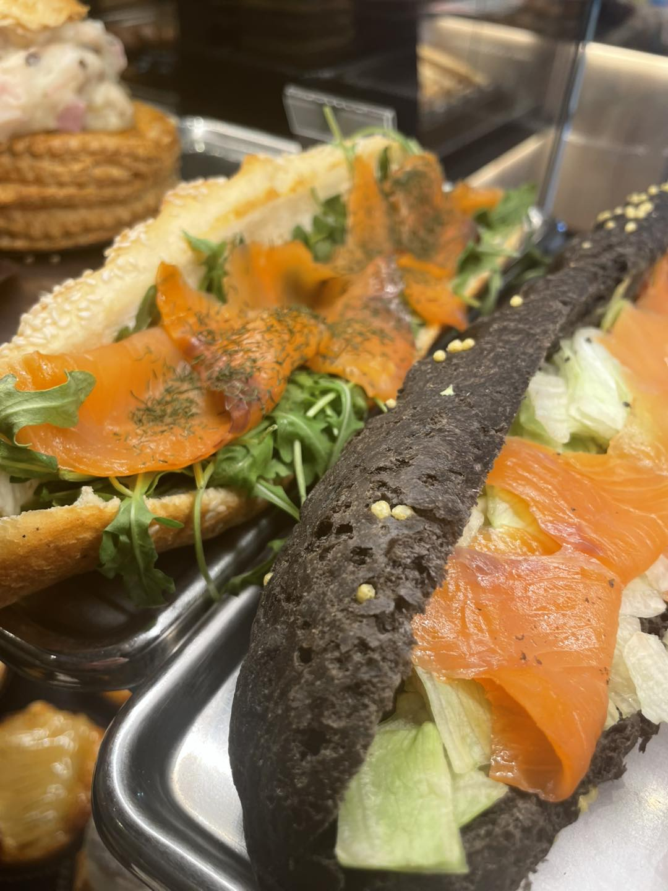
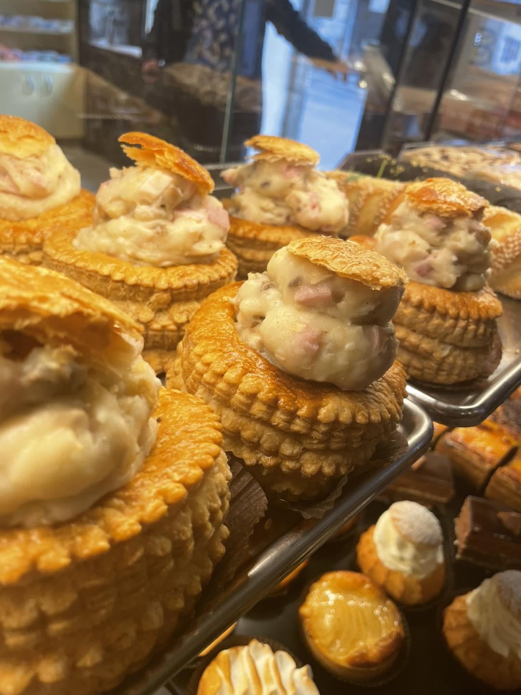
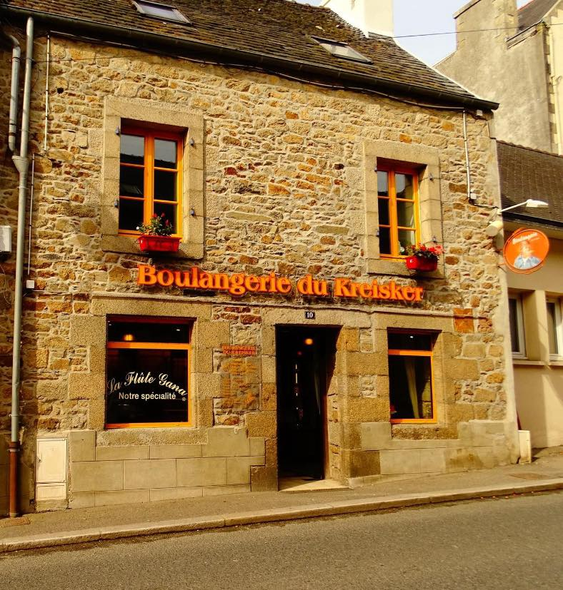

Faire comprendre l'offre en quelques secondes.
La clientele du midi ne cherche pas une longue lecture. Elle veut voir vite ce qui est disponible et comment joindre la boutique.
Une collection qui repond au besoin le plus rapide : venir, choisir vite et repartir avec une offre lisible.



La clientele du midi ne cherche pas une longue lecture. Elle veut voir vite ce qui est disponible et comment joindre la boutique.
On reprend le langage d'une page projet, mais avec des informations compactes et une galerie simple.
La pause dejeuner devient une destination a part entiere dans le site, et non un simple bloc perdu entre les autres produits.